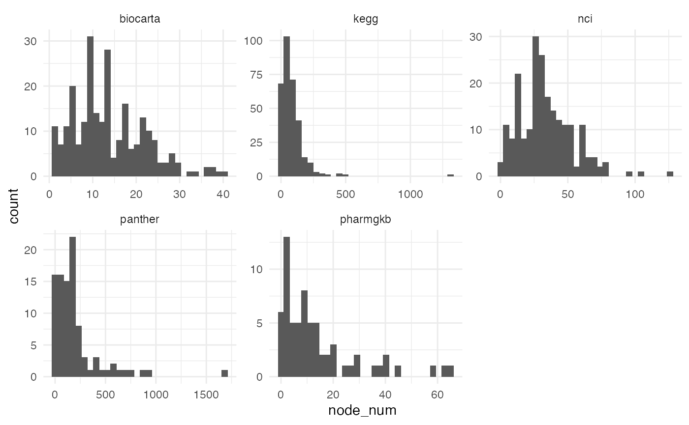
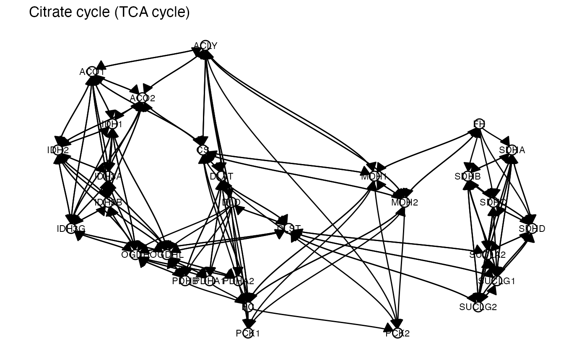
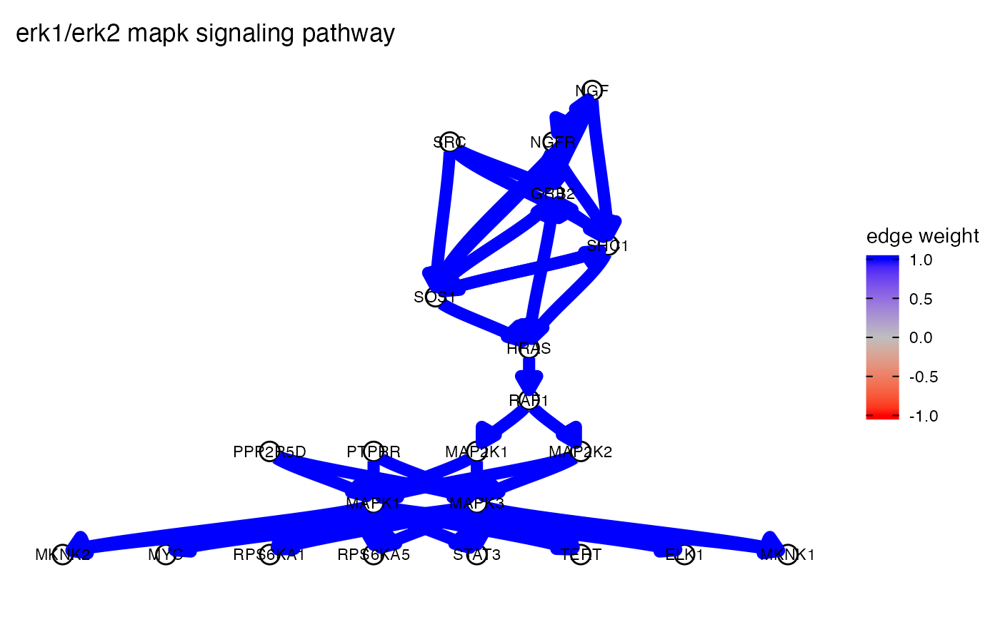
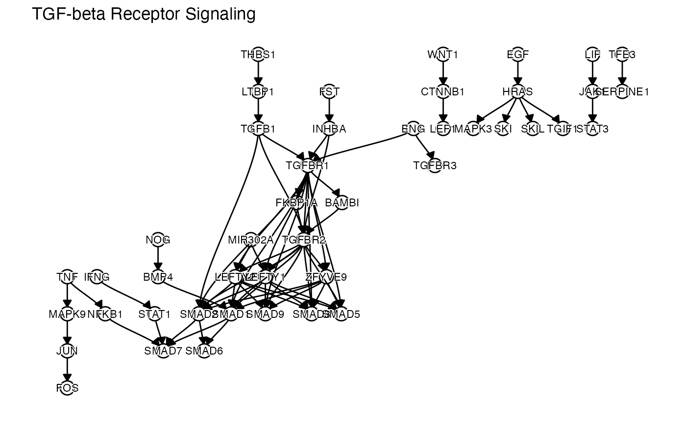

vignettes/pathway_databases.Rmd
pathway_databases.RmdWe provide access to the following topological pathway databases using graphite (Sales et al. 2012) in a processed format. This format looks as follows:
dce::df_pathway_statistics %>%
arrange(desc(node_num)) %>%
head(10) %>%
knitr::kable()| database | pathway_id | pathway_name | node_num | edge_num |
|---|---|---|---|---|
| reactome | R-HSA-162582 | Signaling Pathways | 2479 | 61904 |
| reactome | R-HSA-1430728 | Metabolism | 2047 | 82767 |
| reactome | R-HSA-392499 | Metabolism of proteins | 1962 | 53074 |
| reactome | R-HSA-168256 | Immune System | 1771 | 58241 |
| reactome | R-HSA-1643685 | Disease | 1730 | 54865 |
| panther | P00057 | Wnt signaling pathway | 1644 | 195344 |
| reactome | R-HSA-74160 | Gene expression (Transcription) | 1472 | 32476 |
| reactome | R-HSA-597592 | Post-translational protein modification | 1393 | 26392 |
| reactome | R-HSA-73857 | RNA Polymerase II Transcription | 1339 | 25277 |
| kegg | hsa:01100 | Metabolic pathways | 1314 | 21552 |
Let’s see how many pathways each database provides:
dce::df_pathway_statistics %>%
count(database, sort = TRUE, name = "pathway_number") %>%
knitr::kable()| database | pathway_number |
|---|---|
| pathbank | 48685 |
| smpdb | 48671 |
| reactome | 2390 |
| wikipathways | 601 |
| kegg | 321 |
| panther | 94 |
| pharmgkb | 90 |
Next, we can see how the pathway sizes are distributed for each database:
dce::df_pathway_statistics %>%
ggplot(aes(x = node_num)) +
geom_histogram(bins = 30) +
facet_wrap(~ database, scales = "free") +
theme_minimal()
It is easily possible to plot pathways:
pathways <- get_pathways(
pathway_list = list(
pathbank = c("Lactose Synthesis"),
kegg = c("Fatty acid biosynthesis"),
wikipathways = c("TGF-beta Receptor Signaling")
)
)
lapply(pathways, function(x) {
plot_network(
as(x$graph, "matrix"),
visualize_edge_weights = FALSE,
arrow_size = 0.02,
shadowtext = TRUE
) +
ggtitle(x$pathway_name)
})## [[1]]
##
## [[2]]
##
## [[3]]
## R version 4.1.0 (2021-05-18)
## Platform: x86_64-apple-darwin17.0 (64-bit)
## Running under: macOS Catalina 10.15.7
##
## Matrix products: default
## BLAS: /Library/Frameworks/R.framework/Versions/4.1/Resources/lib/libRblas.dylib
## LAPACK: /Library/Frameworks/R.framework/Versions/4.1/Resources/lib/libRlapack.dylib
##
## locale:
## [1] en_US.UTF-8/en_US.UTF-8/en_US.UTF-8/C/en_US.UTF-8/en_US.UTF-8
##
## attached base packages:
## [1] parallel stats4 stats graphics grDevices utils datasets
## [8] methods base
##
## other attached packages:
## [1] org.Hs.eg.db_3.13.0 AnnotationDbi_1.54.1 IRanges_2.26.0
## [4] S4Vectors_0.30.0 Biobase_2.52.0 BiocGenerics_0.38.0
## [7] dce_0.99.6 forcats_0.5.1 stringr_1.4.0
## [10] dplyr_1.0.7 purrr_0.3.4 readr_2.0.0
## [13] tidyr_1.1.3 tibble_3.1.3 ggplot2_3.3.5
## [16] tidyverse_1.3.1 BiocStyle_2.20.2
##
## loaded via a namespace (and not attached):
## [1] rappdirs_0.3.3 prabclus_2.3-2 ragg_1.1.3
## [4] bit64_4.0.5 knitr_1.33 multcomp_1.4-17
## [7] wesanderson_0.3.6 data.table_1.14.0 KEGGREST_1.32.0
## [10] RCurl_1.98-1.3 generics_0.1.0 metap_1.4
## [13] TH.data_1.0-10 RSQLite_2.2.7 shadowtext_0.0.8
## [16] proxy_0.4-26 CombinePValue_1.0 bit_4.0.4
## [19] tzdb_0.1.2 mutoss_0.1-12 xml2_1.3.2
## [22] lubridate_1.7.10 assertthat_0.2.1 viridis_0.6.1
## [25] amap_0.8-18 xfun_0.24 hms_1.1.0
## [28] jquerylib_0.1.4 evaluate_0.14 DEoptimR_1.0-9
## [31] fansi_0.5.0 dbplyr_2.1.1 readxl_1.3.1
## [34] Rgraphviz_2.36.0 igraph_1.2.6 DBI_1.1.1
## [37] tmvnsim_1.0-2 apcluster_1.4.8 RcppArmadillo_0.10.6.0.0
## [40] ellipsis_0.3.2 backports_1.2.1 bookdown_0.22
## [43] permute_0.9-5 harmonicmeanp_3.0 vctrs_0.3.8
## [46] Linnorm_2.16.0 abind_1.4-5 cachem_1.0.5
## [49] RcppEigen_0.3.3.9.1 withr_2.4.2 ggforce_0.3.3
## [52] sfsmisc_1.1-11 robustbase_0.93-8 bdsmatrix_1.3-4
## [55] checkmate_2.0.0 vegan_2.5-7 pcalg_2.7-3
## [58] mclust_5.4.7 mnormt_2.0.2 cluster_2.1.2
## [61] crayon_1.4.1 ellipse_0.4.2 FMStable_0.1-2
## [64] edgeR_3.34.0 pkgconfig_2.0.3 labeling_0.4.2
## [67] tweenr_1.0.2 GenomeInfoDb_1.28.1 nlme_3.1-152
## [70] ggm_2.5 nnet_7.3-16 rlang_0.4.11
## [73] diptest_0.76-0 lifecycle_1.0.0 sandwich_3.0-1
## [76] mathjaxr_1.4-0 modelr_0.1.8 cellranger_1.1.0
## [79] rprojroot_2.0.2 polyclip_1.10-0 matrixStats_0.60.0
## [82] graph_1.70.0 Matrix_1.3-3 zoo_1.8-9
## [85] reprex_2.0.0 png_0.1-7 viridisLite_0.4.0
## [88] bitops_1.0-7 Biostrings_2.60.1 blob_1.2.2
## [91] scales_1.1.1 memoise_2.0.0 graphite_1.38.0
## [94] magrittr_2.0.1 plyr_1.8.6 gdata_2.18.0
## [97] zlibbioc_1.38.0 compiler_4.1.0 plotrix_3.8-1
## [100] clue_0.3-59 cli_3.0.1 XVector_0.32.0
## [103] MASS_7.3-54 mgcv_1.8-35 tidyselect_1.1.1
## [106] stringi_1.7.3 textshaping_0.3.5 highr_0.9
## [109] yaml_2.2.1 locfit_1.5-9.4 ggrepel_0.9.1
## [112] grid_4.1.0 sass_0.4.0 tools_4.1.0
## [115] rstudioapi_0.13 snowfall_1.84-6.1 gridExtra_2.3
## [118] farver_2.1.0 Rtsne_0.15 ggraph_2.0.5
## [121] digest_0.6.27 BiocManager_1.30.16 flexclust_1.4-0
## [124] mnem_1.8.0 fpc_2.2-9 ppcor_1.1
## [127] Rcpp_1.0.7 broom_0.7.9 httr_1.4.2
## [130] ggdendro_0.1.22 kernlab_0.9-29 naturalsort_0.1.3
## [133] Rdpack_2.1.2 colorspace_2.0-2 rvest_1.0.1
## [136] fs_1.5.0 splines_4.1.0 RBGL_1.68.0
## [139] statmod_1.4.36 sn_2.0.0 expm_0.999-6
## [142] pkgdown_1.6.1 graphlayouts_0.7.1 multtest_2.48.0
## [145] flexmix_2.3-17 systemfonts_1.0.2 jsonlite_1.7.2
## [148] tidygraph_1.2.0 corpcor_1.6.9 modeltools_0.2-23
## [151] R6_2.5.0 gmodels_2.18.1 TFisher_0.2.0
## [154] pillar_1.6.2 htmltools_0.5.1.1 glue_1.4.2
## [157] fastmap_1.1.0 class_7.3-19 codetools_0.2-18
## [160] tsne_0.1-3 mvtnorm_1.1-2 utf8_1.2.2
## [163] lattice_0.20-44 bslib_0.2.5.1 logger_0.2.1
## [166] numDeriv_2016.8-1.1 curl_4.3.2 gtools_3.9.2
## [169] survival_3.2-11 limma_3.48.1 rmarkdown_2.9
## [172] desc_1.3.0 fastICA_1.2-2 munsell_0.5.0
## [175] e1071_1.7-8 fastcluster_1.2.3 GenomeInfoDbData_1.2.6
## [178] haven_2.4.2 reshape2_1.4.4 gtable_0.3.0
## [181] rbibutils_2.2.2